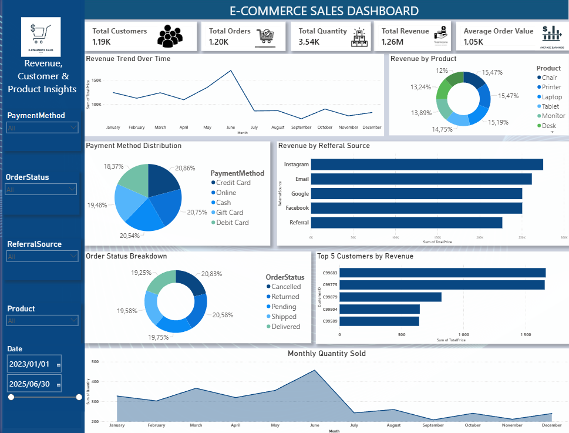
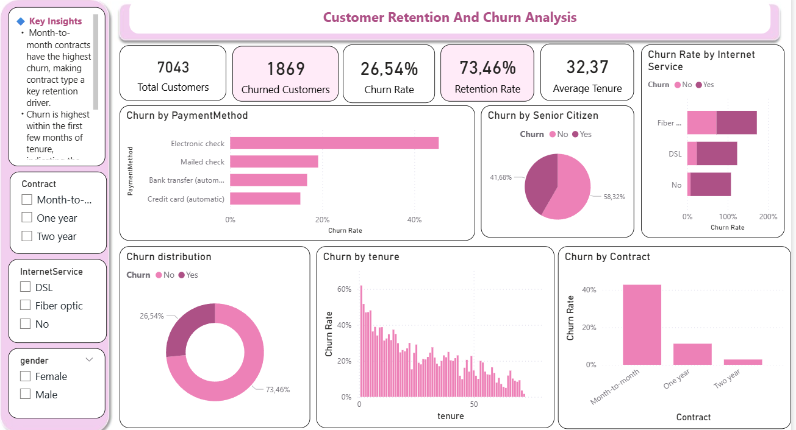

WELCOME TO MY PORTFOLIO
Python • SQL • Power BI • HTML • CSS
Building data-driven solutions with Python, SQL & Power BI.
Your vision,My code
I'm an aspiring Data/software Engineer with a passion for transforming raw data into meaningful insights and scalable solutions. I enjoy working with Python, SQL, and Power BI to clean, analyze, and visualize data while building projects that solve real-world business problems. I'm continuously expanding my technical skills through hands-on projects and always looking for opportunities to learn and grow within the data industry.
Projects Built
Data Tools
Certification
Writing clean code, automation, and data analysis.
Querying databases and managing data efficiently.
Creating interactive dashboards and reports.
Building responsive and semantic web page structures.
Designing modern, responsive and visually appealing websites.
SQL • Power BI

Developed an interactive dashboard using SQL and Power BI to analyze sales performance, customer behaviour, and business trends through dynamic visualizations and KPIs.
SQL • Power BI

Built an interactive Customer Churn Dashboard using SQL and Power BI to analyze customer behaviour, identify churn patterns, and provide actionable insights that support customer retention strategies.
I'm always interested in opportunities, internships, and collaborating on data projects. Feel free to reach out!
📄 Download ResumeThank you for taking the time to explore my portfolio. I'm always excited to connect with professionals, collaborate on meaningful projects, and explore new opportunities in software engineering, data engineering, and analytics.